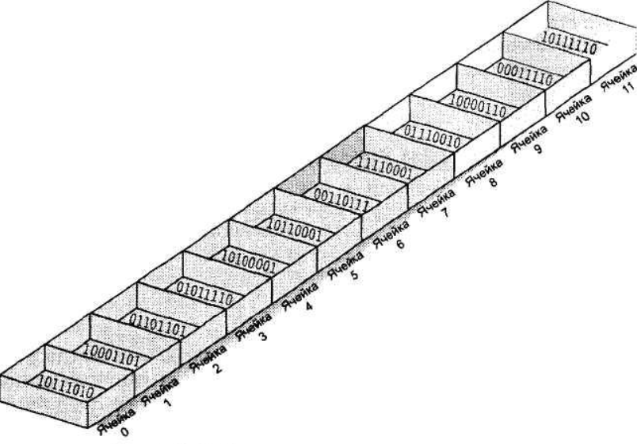

Урок 3: Списки в Python
Списки — упорядоченные изменяемые коллекции элементов разных типов. Один из самых важных типов данных в Python.
1. Создание и основы работы

Список — как последовательность пронумерованных ячеек памяти
# Создание списков
numbers = [1, 2, 3, 4, 5] # Список чисел
fruits = ['яблоко', 'банан', 'апельсин'] # Список строк
mixed = [1, 'текст', 3.14, True] # Смешанный список
empty = [] # Пустой список
# Доступ к элементам (индексация с 0!)
print(fruits[0]) # 'яблоко'
print(fruits[-1]) # 'апельсин' (отрицательные индексы с конца)
# Изменение элементов
fruits[1] = 'груша'
print(fruits) # ['яблоко', 'груша', 'апельсин']
Важно! Индексация начинается с 0. Попытка доступа к несуществующему индексу вызовет ошибку IndexError.
2. Основные операции
Основные методы списков
| Метод | Описание | Пример |
|---|
| append(x) | Добавляет элемент в конец | fruits.append('виноград') |
| insert(i, x) | Вставляет на позицию i | fruits.insert(1, 'лимон') |
| remove(x) | Удаляет первый элемент x | fruits.remove('банан') |
| pop([i]) | Удаляет и возвращает элемент | fruits.pop(2) |
| index(x) | Возвращает индекс элемента | fruits.index('яблоко') |
| count(x) | Считает количество x | fruits.count('яблоко') |
| sort() | Сортирует список | fruits.sort() |
| reverse() | Разворачивает список | fruits.reverse() |
| copy() | Поверхностная копия | new = fruits.copy() |
| clear() | Очищает список | fruits.clear() |
3. Срезы (slice)
Синтаксис срезов: list[начало:конец:шаг]
numbers = [0, 1, 2, 3, 4, 5, 6, 7, 8, 9]
print(numbers[2:5]) # [2, 3, 4] (с 2 до 5 не включая)
print(numbers[:3]) # [0, 1, 2] (с начала до 3)
print(numbers[5:]) # [5, 6, 7, 8, 9] (с 5 до конца)
print(numbers[::2]) # [0, 2, 4, 6, 8] (каждый второй)
print(numbers[::-1]) # [9, 8, 7, 6, 5, 4, 3, 2, 1, 0] (разворот)
Практические задания
Уровень 1: Базовые операции (15 заданий)
- Создайте список чисел от 1 до 10
- Выведите 3-й элемент списка [10, 20, 30, 40, 50]
- Замените последний элемент списка на 100
- Добавьте элемент 'новый' в конец списка
- Удалите второй элемент из списка
- Проверьте, есть ли число 5 в списке [1, 3, 5, 7, 9]
- Соедините два списка в один
- Посчитайте количество элементов в списке
- Выведите список в обратном порядке
- Создайте список из 5 одинаковых элементов
- Найдите сумму элементов списка чисел
- Найдите минимальный элемент в списке
- Создайте копию списка (не ссылку!)
- Удалите все элементы из списка
- Создайте список квадратов чисел от 1 до 5
Уровень 2: Работа с методами (20 заданий)
- Отсортируйте список чисел по возрастанию
- Отсортируйте список строк по алфавиту
- Удалите дубликаты из списка
- Разделите список на два: четные и нечетные индексы
- Найдите все элементы, которые встречаются более 1 раза
- Создайте список из общих элементов двух списков
- Разверните список без использования reverse()
- Посчитайте количество цифр в списке смешанных типов
- Преобразуйте список строк в список их длин
- Создайте список только из чисел (фильтрация)
- Разделите список на подсписки заданного размера
- Найдите второй по величине элемент в списке
- Проверьте, является ли список палиндромом
- Создайте список всех делителей числа N
- Перемешайте элементы списка случайным образом
- Замените все отрицательные числа на 0
- Создайте список из первых букв каждого слова в списке строк
- Найдите самый длинный элемент в списке строк
- Создайте список чисел Фибоначчи до N-го элемента
- Преобразуйте список чисел в строку (например, [1,2,3] → "1-2-3")
Уровень 3: Сложные задачи (15 заданий)
- Реализуйте сортировку пузырьком
- Напишите функцию для поиска всех простых чисел до N (решето Эратосфена)
- Реализуйте алгоритм бинарного поиска в отсортированном списке
- Создайте список всех перестановок элементов исходного списка
- Реализуйте алгоритм сжатия списка (RLE)
- Напишите функцию для группировки слов по длине
- Реализуйте алгоритм поиска наибольшей возрастающей подпоследовательности
- Реализуйте алгоритм поиска отсутствующего числа в списке
Пример решения задачи 36 (сортировка пузырьком)
def bubble_sort(lst):
n = len(lst)
for i in range(n-1):
for j in range(n-i-1):
if lst[j] > lst[j+1]:
lst[j], lst[j+1] = lst[j+1], lst[j]
return lst
numbers = [5, 3, 8, 4, 2]
print(bubble_sort(numbers)) # [2, 3, 4, 5, 8]